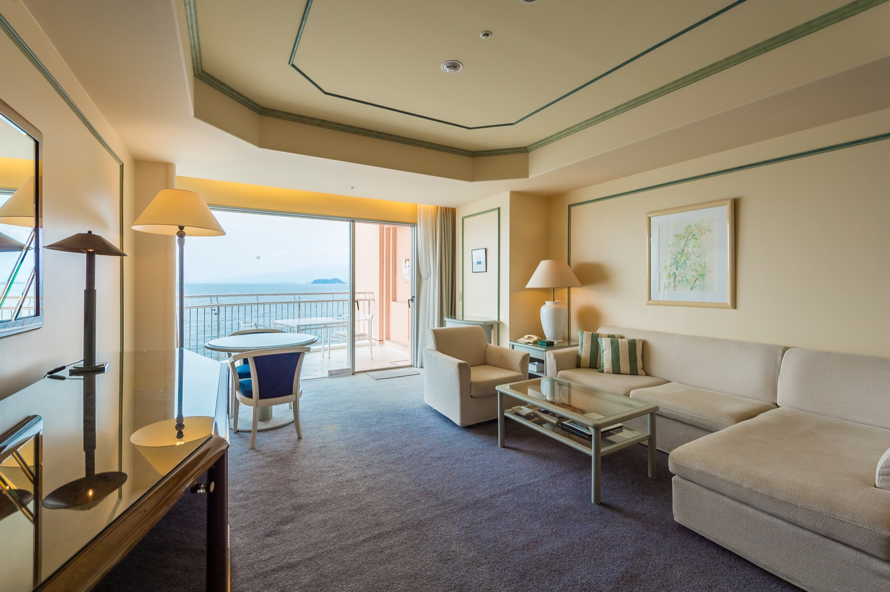
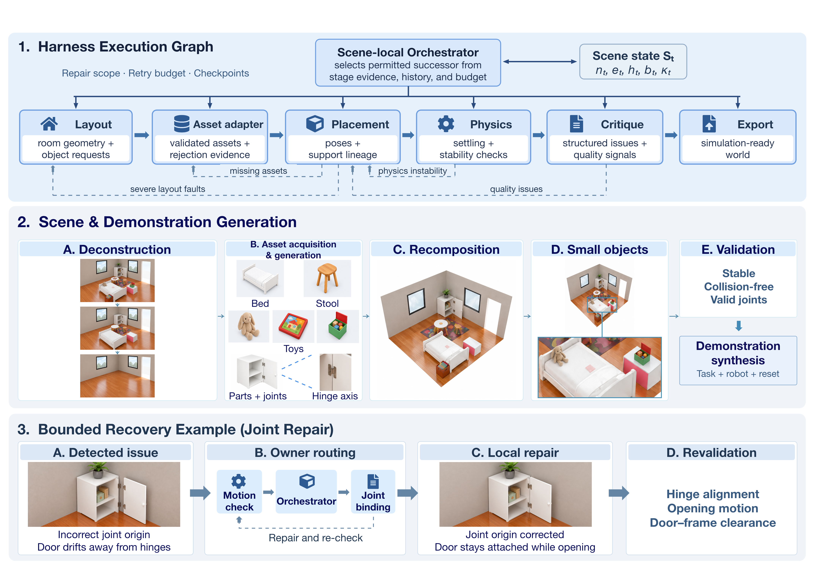
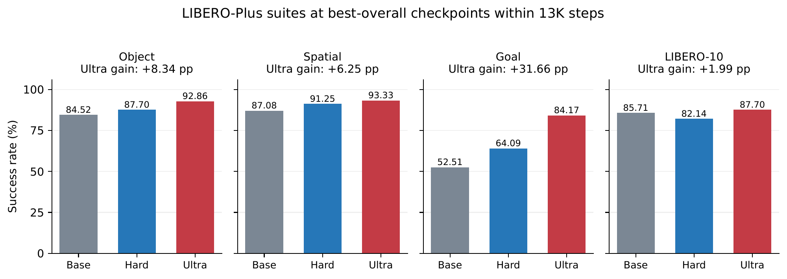
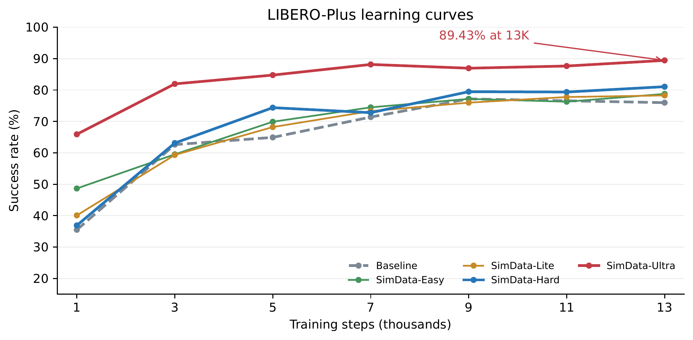

Awomo-SimDataEngine: Agentic Simulation-Ready World Generation
Overview
Awomo-SimDataEngine connects asset and scene generation to robot demonstration synthesis. SimForge constructs single-room scenes and multi-room houses from text, while Unravel reconstructs editable scenes from a single image. ISArt provides structure-grounded parts and joints for articulated objects. A shared graph-native harness coordinates construction, validation, and bounded local repair, retaining unaffected scene state.
SimForge: Text-to-Scene Generation
SimForge generates single-room scenes and multi-room environments from text. Explore a generated four-room apartment with living and dining, kitchen, office, and bedroom areas.
SimForge · Generated apartment
Drag to rotate · scroll to zoom. A cutaway outer wall exposes the room interiors.
Unravel: Single Image to Interactive Scene Generation
Unravel deconstructs a single image, collects object assets and geometric evidence, and recomposes a scene with independently editable objects.
Input image

Generated scene
Rotate · zoom · inspect
Select any of the eight examples to view its input image and interactive 3D reconstruction.
ISArt: Single-Image based Articulated Asset Generation
ISArt generates object parts and joint structure. Reference images and generated motion are shown side by side.
10 examples · scroll or use the arrows to browse. Reference image (left), generated motion (right).
These clips visualize kinematic articulation, not robot demonstrations or physical-validation results.
Graph-Native Harness: Execution and Repair
A scene-local orchestrator coordinates construction, validation, and bounded repair. Failures return to the responsible module while unaffected scene state is preserved.

The harness represents world construction as an execution graph spanning layout, asset acquisition, placement, physics checks, critique, and export. A scene-local orchestrator selects permitted next steps using shared scene state, stage evidence, execution history, and the remaining retry budget.
When a check fails, structured evidence identifies the responsible module and limits the repair scope. For example, a misplaced joint origin can be corrected locally and rechecked for hinge alignment, opening motion, and door-frame clearance, without rebuilding the entire scene. Checkpoints preserve reusable state; unsuccessful attempts retry within budget, restore a checkpoint, or terminate with a recorded failure.
Policy Results
On LIBERO-Plus, SimData-Ultra reaches 89.43% success, improving over benchmark-only training by 12.26 percentage points.
| Co-training data | Selected step | Success (%) ↑ | Gain (pp) |
|---|---|---|---|
| Baseline | 9K | 77.17 | — |
| SimData-Easy | 13K | 78.76 | +1.59 |
| SimData-Lite | 13K | 78.27 | +1.10 |
| SimData-Hard | 13K | 81.06 | +3.89 |
| SimData-Ultra | 13K | 89.43 | +12.26 |
Generalization across Tasks
Goal success increases from 52.51% to 84.17% (+31.66 percentage points). Object and spatial gains are +8.34 and +6.25 points; the long-horizon LIBERO-10 gain is smaller (+1.99 points).

Training Progress

LIBERO-Pro Generalization
| Co-training data | Overall ↑ | Object ↑ | Swap ↑ | Language ↑ | Task ↑ | Environment ↑ |
|---|---|---|---|---|---|---|
| Baseline | 46.70 | 79.50 | 3.00 | 93.50 | 18.00 | 39.50 |
| SimData-Easy | 47.90 | 77.00 | 4.00 | 93.50 | 21.00 | 44.00 |
| SimData-Lite | 46.90 | 77.00 | 3.00 | 90.50 | 18.50 | 45.50 |
| SimData-Hard | 47.10 | 80.50 | 4.00 | 96.00 | 18.50 | 36.50 |
LIBERO-Pro gains are modest overall and vary by generalization dimension.
Scene Results
Image-to-Scene Fidelity
| Method | CLIP-I ↑ | LPIPS ↓ | Edge IoU ↑ |
|---|---|---|---|
| GPT-6 Astra (Ultra/ExtraHigh) | 0.803 | 0.649 | 0.107 |
| Unravel (w/ finetuned GPT-6) | 0.854 | 0.632 | 0.156 |
Text-to-Scene Quality
Room and house evaluations are reported separately. The comparison below retains all reported metrics for SceneSmith and SimForge; values are means ± 95% confidence intervals.
| Method | #Obj | CNT ↑ | ATR ↑ | OOR ↑ | OAR ↑ | ACC ↑ | NAV ↑ | COL ↓ | STB ↑ | OOB ↓ |
|---|---|---|---|---|---|---|---|---|---|---|
| SceneSmith | 71.1±13.0 | 82.9±3.4 | 74.4±6.2 | 67.6±5.8 | 80.6±5.5 | 83.4±1.5 | 97.6±1.1 | 1.2±0.6 | 95.6±1.7 | 0.2±0.4 |
| SimForge | 67.6±5.1 | 89.4±4.2 | 76.8±7.1 | 73.1±5.4 | 79.3±5.1 | 98.1±1.4 | 98.4±1.2 | 0.0±0.0 | 100.0±0.0 | 0.0±0.0 |
| Method | #Obj | CNT ↑ | ATR ↑ | OOR ↑ | OAR ↑ | ACC ↑ | NAV ↑ | COL ↓ | STB ↑ | OOB ↓ |
|---|---|---|---|---|---|---|---|---|---|---|
| SceneSmith | 214.1±60.9 | 83.3±6.8 | 66.8±24.6 | 76.6±9.2 | 82.6±5.8 | 79.9±2.0 | 96.5±2.1 | 0.9±0.5 | 79.8±9.1 | 0.6±0.3 |
| SimForge | 242.3±32.9 | 89.7±6.4 | 70.3±26.7 | 78.9±10.3 | 81.9±6.1 | 93.2±2.7 | 98.1±1.3 | 0.0±0.0 | 100.0±0.0 | 0.0±0.0 |
#Obj: object count; CNT: count agreement; ATR: attribute correctness; OOR/OAR: object–object / object–architecture relations; ACC: accessibility; NAV: navigability; COL: collision; STB: stability; OOB: out-of-bounds. These are scene-quality measurements under the stated checks, not generation acceptance rates or isolated Harness effects.